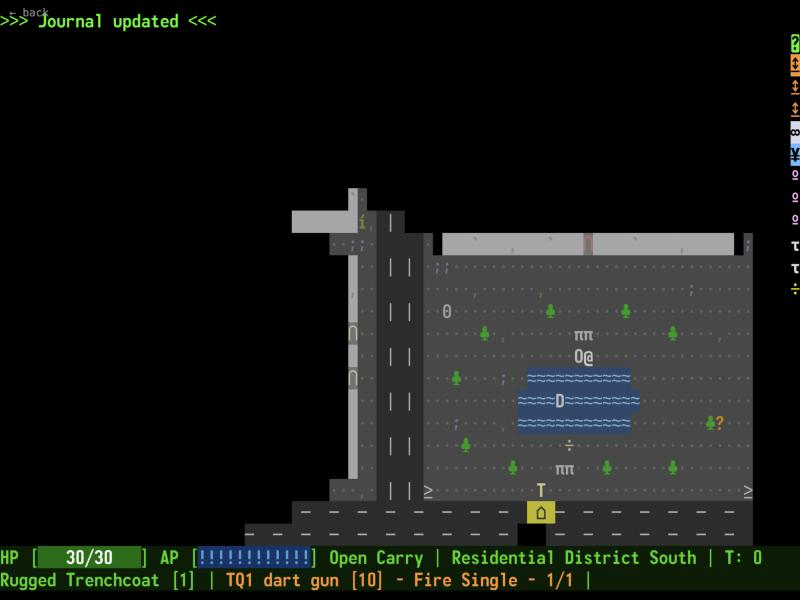
> FELIX' UNFINISHED GAMES_
Hobby games I made myself, mostly RPGs written in Go. Most of them run in your browser.
// PLAY IN YOUR BROWSER
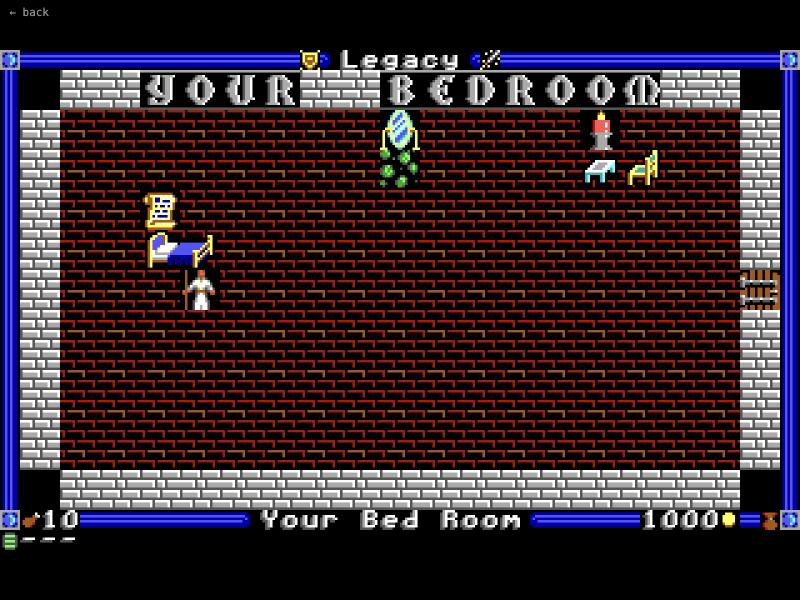
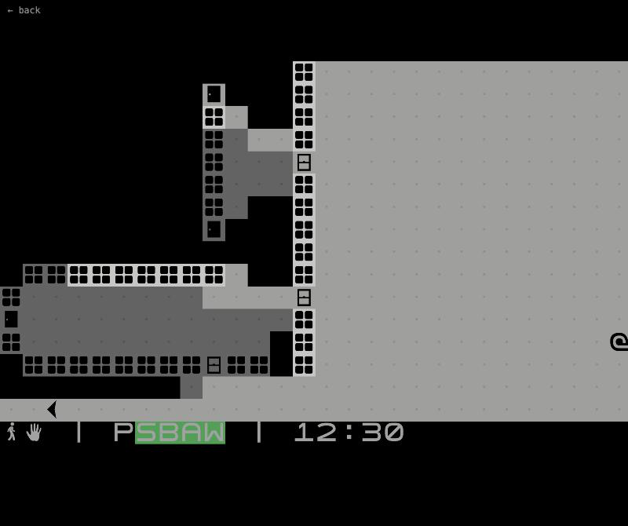
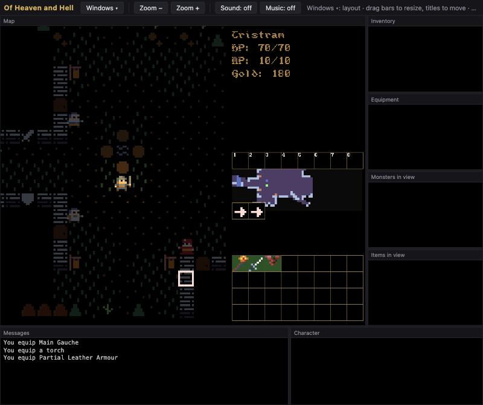
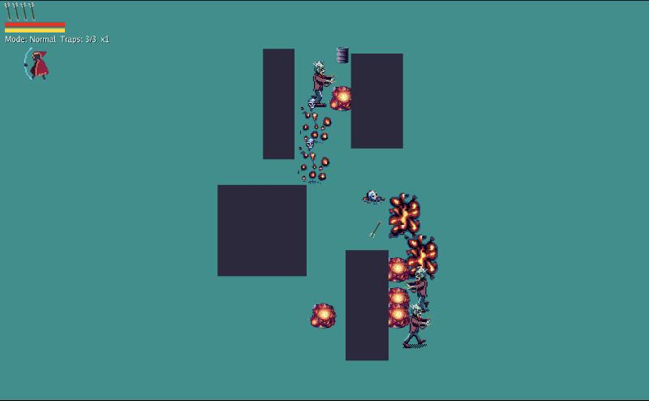
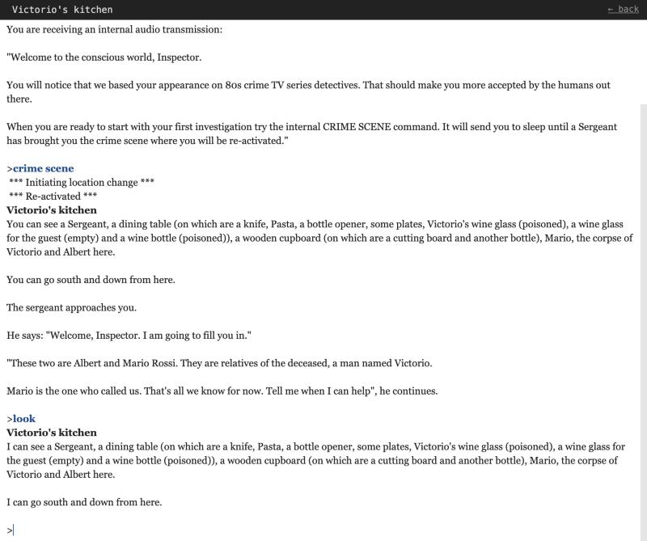
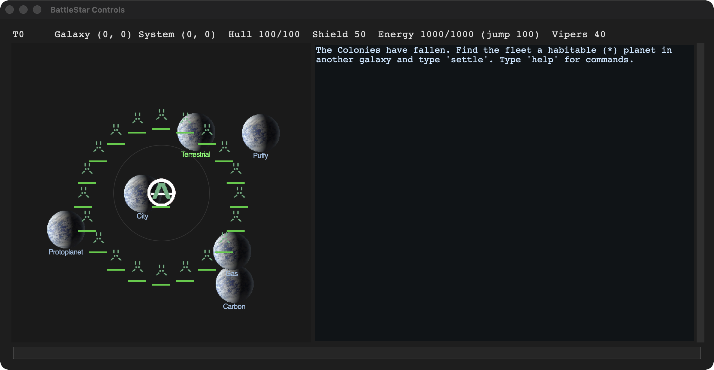
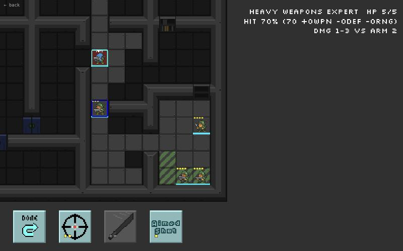
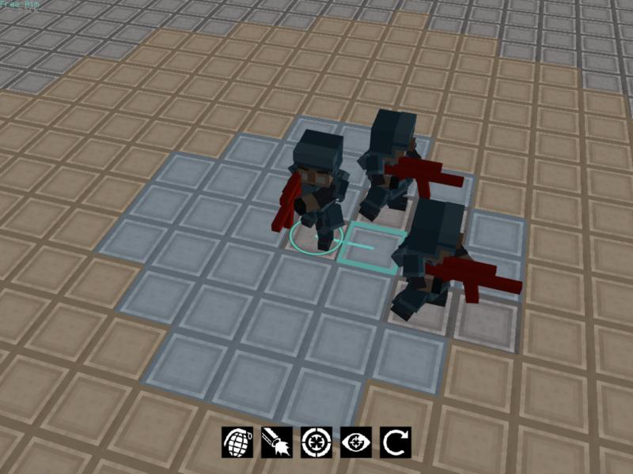
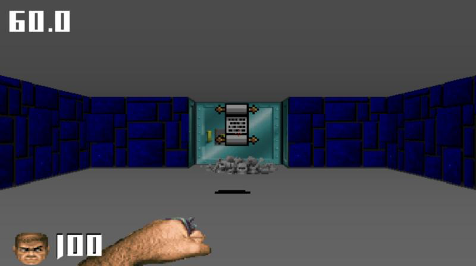
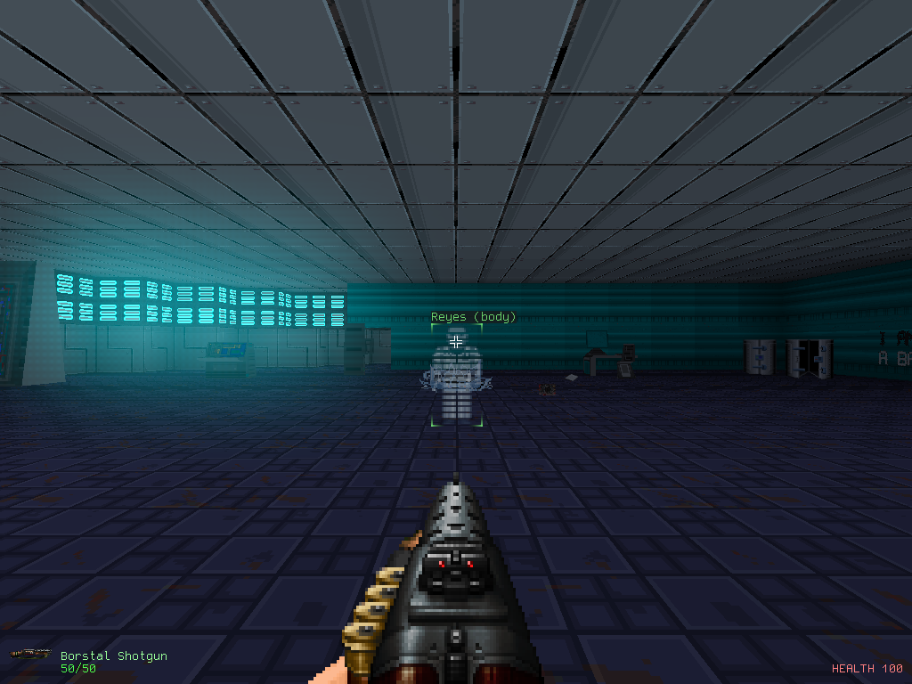
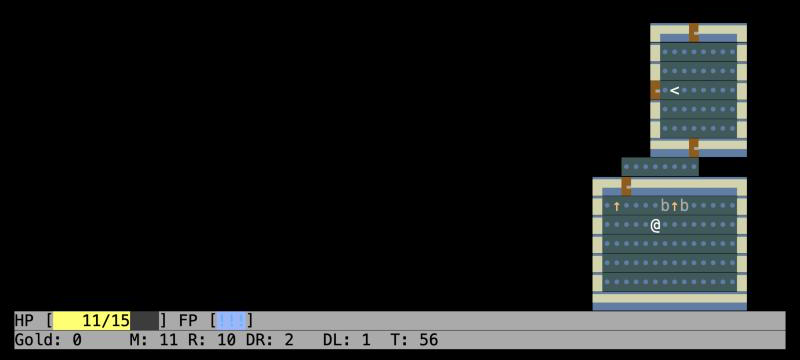
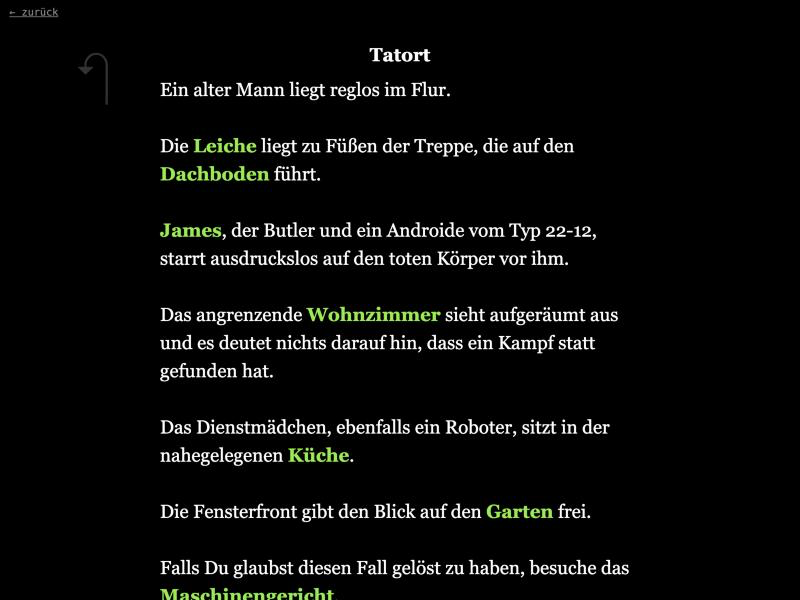
// MODS
Minecraft Mods
A pile of small Fabric mods: gliders, climbing claws, a grappling hook, a white flag that calms mobs, a photo safari, a build bot and more. Most add one craftable item that changes how you explore or survive.
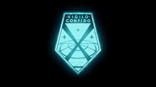
Vigilo Confido
A big OXCE expansion bringing modern XCOM ideas to the 1994 original: five soldier classes with ~50 scripted skills, eight new aliens, tiered swords, shotguns, sniper rifles and rechargeable lasers.